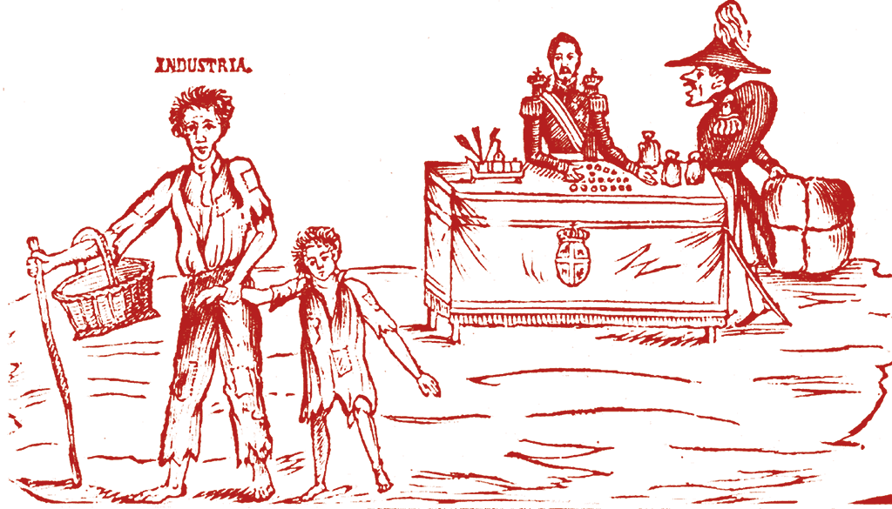

HISTÒRIA D’ESPANYA · 2n BATXILLERAT
Nom o codi: __________________________ Grup: ______ Data: __________
Entrenament adaptat de 50 minuts basat en el format PAU GVA 2026 verificat. La prova oficial dura 90 minuts. No és un examen oficial ni un simulacre complet. No s’han pogut confirmar orientacions específiques d’Història d’Espanya per a 2027.
00–04 · PREPARA’T / 04–10 · CONCEPTES
Carlisme · Desamortització · Sufragi censatari · Pronunciament
Categoria + trets distintius + exemple datat. Orientació de pràctica: 35–55 paraules cadascun.
Itinerari: 4′ preparació + 6′ conceptes + 10′ font + 14′ tema + 8′ transversal + 6′ revisió + 2′ eixida = 50 minuts.
10–20 · COMENTARI DE FONT
Posats a la venda simultàniament tots els béns nacionals (...), calculats els fraus inevitables que hi haurà (...), es pot assegurar (...) que si hui els béns nacionals tenen un valor de 100, no s’amortitzarà un deute de 30. Per contra, el pla senzill d’arrendaments emfitèutics (...) té l’avantatge de promoure instantàniament la riquesa nacional i d’augmentar a proporció els recursos de l’Estat. (...) El Govern, en acabar l’arrendament, serà l’amo de les finques que hui posseeix.
Álvaro Flórez Estrada, 1836. Fragment abreujat de la traducció reproduïda pel manual; les omissions s’indiquen amb (...). El manual l’identifica com a discurs de l’economista i polític.

Caricatura publicada a El Republicano, 1842, reproduïda al manual. L’autoria individual no s’hi identifica. La imatge critica Espartero i la seua política comercial; l’acusació de suborn forma part del discurs satíric.
Font triada: ____ · Tipus i naturalesa (0,5) + anàlisi (1) + context ajustat a la data i connexió internacional pertinent (1).
Orientació de pràctica: 100–140 paraules. No inventes dades d’autoria i no dones per provada una acusació satírica.
20–34 · DESENVOLUPAMENT
Explica com la guerra carlina i les mobilitzacions van condicionar la revolució liberal, quines reformes polítiques i econòmiques es van aprovar i per què les regències van entrar en crisi.
Explica la caiguda d’Isabel II, el nou marc de drets de 1869 i les dificultats de la monarquia d’Amadeu I i de la Primera República fins al desenllaç de 1874.
Opció triada: ____ · 2′ de pla + 12′ de redacció. Orientació de pràctica: 180–240 paraules.
34–42 · TRANSVERSAL / 42–48 · REVISIÓ / 48–50 · EIXIDA
Compara la participació política en el sistema liberal isabelí i en el Sexenni amb el reconeixement del vot femení durant la Segona República. Explica qui podia votar, quines exclusions es mantenien i per què l’ampliació del dret de sufragi no equival, per si sola, a una democratització completa.
1845–1846. En el sistema moderat, la llei electoral de 1846 restringeix el vot amb requisits censataris. La Constitució de 1845 remet la concreció electoral a la llei.
1868–1870. El decret de 1868, la Constitució de 1869 i la normativa electoral del Sexenni garanteixen el sufragi universal masculí. Les dones no poden votar.
1931–1933. L’article 36 de la Constitució de 1931 reconeix igualtat de drets electorals per als dos sexes. Les dones participen per primera vegada en eleccions al Congrés el 1933.
Una cautela. La trajectòria no és lineal: hi ha restriccions i interrupcions entre períodes. El dret reconegut i el seu exercici lliure requereixen anàlisis diferents.
Font: Congrés dels Diputats · La universalització del sufragi.
Orientació de pràctica: 90–130 paraules. Usa un criteri comú i exemples dels dos segles.
Un error detectat: __________________________________________________
Una acció concreta abans de l’examen: ___________________________________
Models orientatius i fonts completes en el recurs digital. Les extensions són didàctiques, no oficials. La qualitat de les respostes requereix revisió docent.